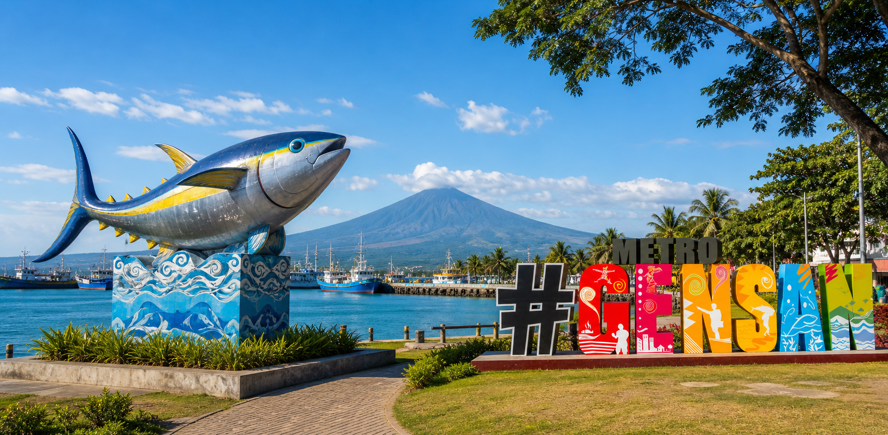
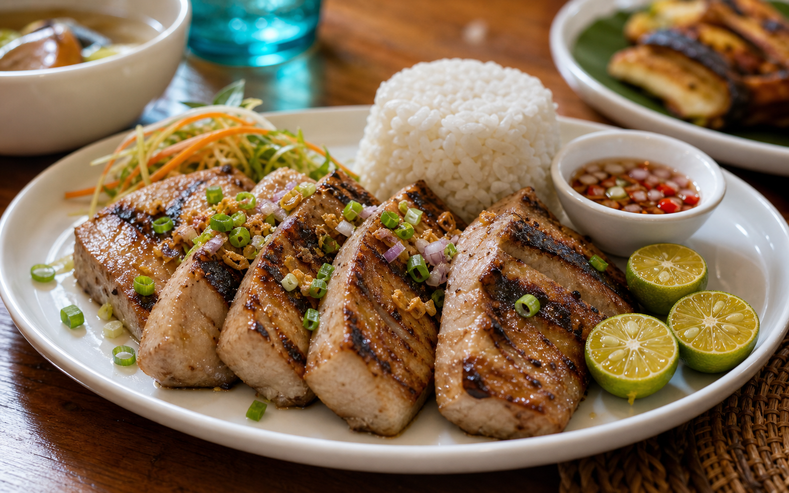

General Santos City visitor guide
Explore General Santos City with a practical local guide.
Find places to stay, food worth trying, easy activities, and starter guides for planning a GenSan trip.
General Santos City: from Dadiangas to a South Mindanao gateway.
General Santos City grew from the coastal settlement of Dadiangas, with its modern development strongly linked to General Paulino Santos and the settlement program that reached the area in 1939. The place was later renamed General Santos and became a chartered city in 1968.
The city is also proudly known as the Home of Champions, a name shaped by Generals who have reached national and world stages in sports, talent, and public life. That winning spirit is part of the local pride visitors feel when they arrive.
Today, GenSan is a practical and welcoming city known for its tuna industry, seafood culture, festivals, hotels, malls, and access to Sarangani Bay. This guide focuses on simple visitor information: where to stay, where to eat, what to do, and how to plan a smooth trip.


Start here
Plan by what you need first.
Featured starters
Sample places to organize before launch.
These cards use placeholder data. Replace them with verified names, photos, contacts, and map links before publishing.
Travel guides